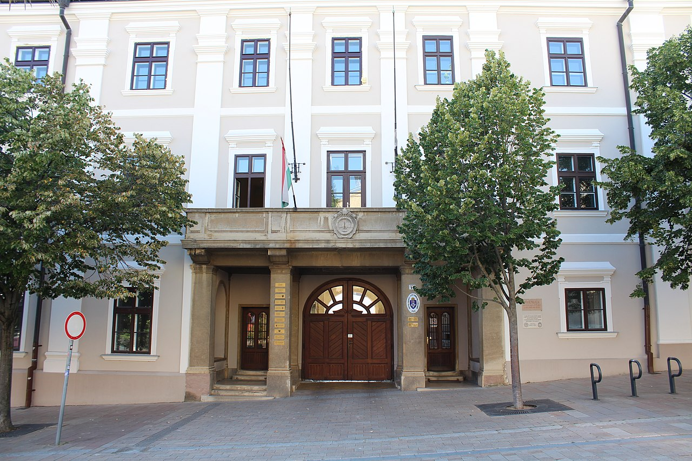
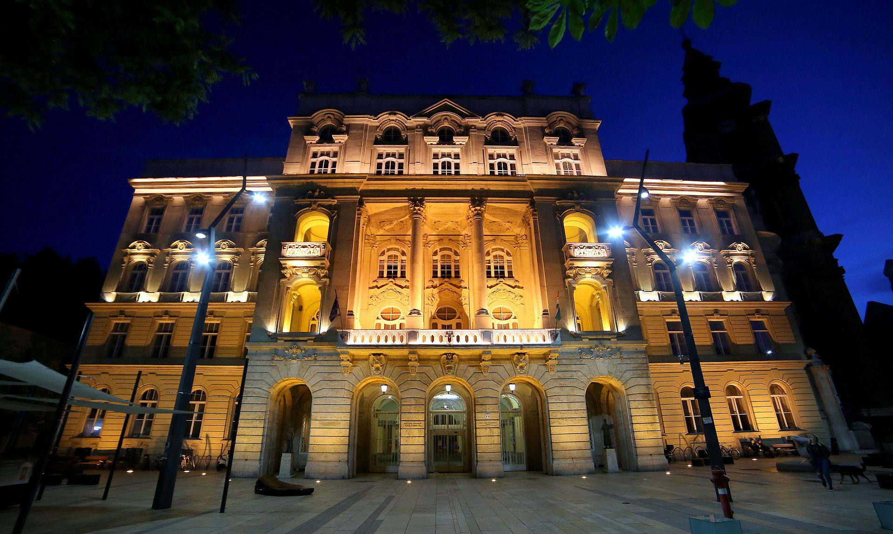
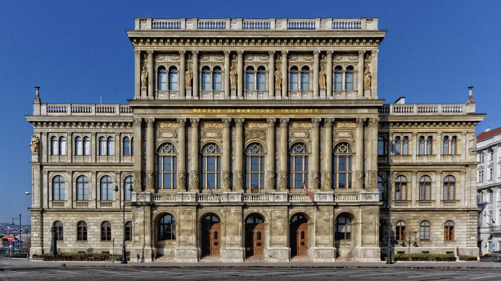
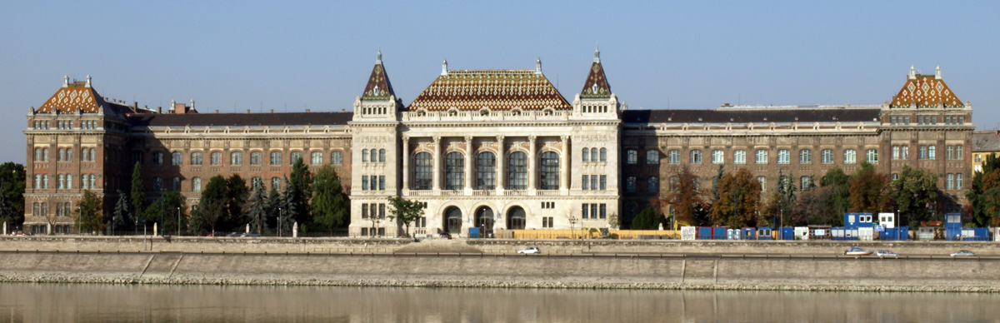
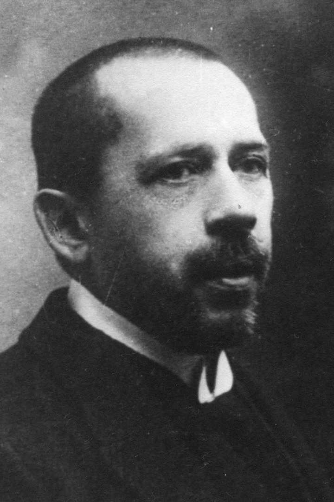
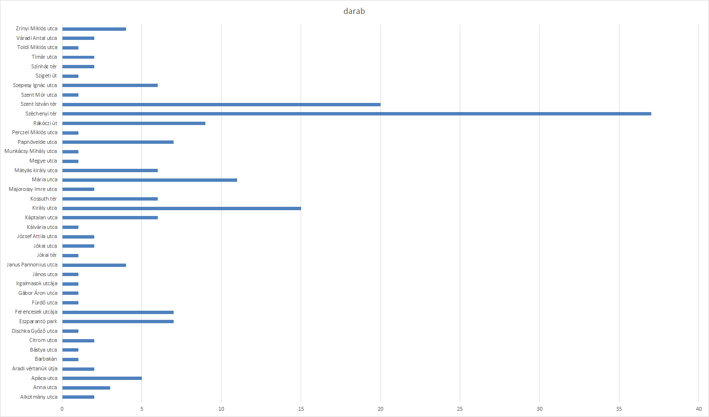
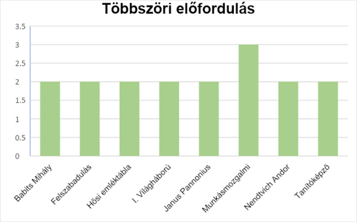
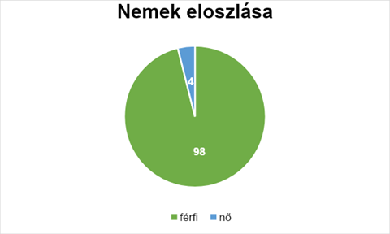
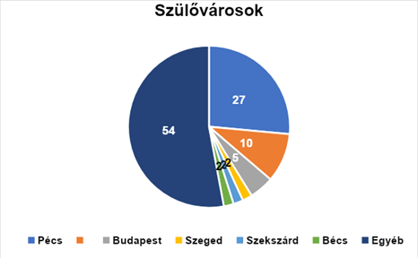
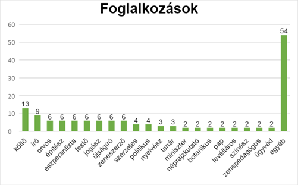

Rólunk
A projektet készítette:
Barkóczy Zsombor (Könyvkidolgozó)
Dömölki András (Könyvkidolgozó)
Flibert Virág (Szövegszerkesztő)
Nagy Richárd (Weblapfejlesztés)
Kutatási statisztikákért kattintson ide:
Térkép
Az adatokat 193 emléktáblával számoltuk ki, azóta az adatbázis frissült.
Családja
Buday László 1873. október 27-én született Pécsett tízgyermekes nemesi családban. Édesapja Buday Béla (1823–1900), a pécsi káptalan uradalmi mérnökeként dolgozott, édesanyja Kelemen Tekla (1842–1902). Testvérei mindketten értelmiségi pályát futottak be, Buday Kálmán (1863–1937) mint orvos, patológus, egyetemi tanár, Buday Dezső (1879–1919) pedig jogászként tevékenykedett. Felesége Szekula Mária volt.
Tanulmányai
Középiskolai tanulmányait szülővárosában, a Ciszterci Rend Pécsi Katolikus Főgimnáziumában folytatta. Ekkor érdeklődése még az irodalomra irányult, amiben sikerét az is mutatta, hogy tizenöt éves korától költeményei is jelentek meg helyi lapokban.
 A gimnáziumot 1891-ben végezte el, ezután beiratkozott a Budapesti Tudományegyetemre, ahol 1897-ben megszerezte a jog- és államtudományi doktorátust, s ugyanekkor statisztikai szakvizsgáját is elvégezte. Egyetemi évei alatt több újságnak is dolgozott, az Ország-Világ segédszerkesztőjeként, illetve a Fővárosi Lapok munkatársaként is dolgozott. 1894-ben jelent meg első, önálló verseskötete, 1895-ben pedig megírta „ reformátor” című regényét.
Tudományos munkássága
1896-ban a Központi Statisztikai Hivatal munkatársa lett és aktívan szerepet vállalt az 1897-es évi szervezeti reform és az 1898-as első hivatali munkaterv kidolgozásában. Az 1900. évi népszámlálás lebonyolítását és eredményeinek közlését is az ő irányítása alatt vitték véghez. Az 1900-as évek elején munkaszeretetének és szorgalmának köszönhetően már jelentős tudományos munkásságot tudott felmutatni. 1901-ben „A m. kir. központi statisztikai hivatal adatgyűjtéseinek magyarázata” című munkájában összefoglalta a legfontosabb tudnivalókat a hivatalos statisztikai adatgyűjtéssel kapcsolatban mindazok számára, akik statisztikai szolgálatban dolgoznak. 1911-ben jelent meg a „M. kir. központi statisztikai hivatal munkássága (1871-1911)” című kötet aminek szerkesztési folyamatában részt vett. Az 1910. évi népszámlálás megszervezésében és előkészítésében szintén vezető szerepet töltött be.
A KSH vezetőjeként
1914-ben, Vargha Gyula távozása után a Központi Statisztikai Hivatal aligazgatójává nevezték ki, majd 1914. augusztus 1-től igazgatójává léptették elő.

A hivatal vezetői pozícióját betöltő évei alatt tervei nagy részét azonban nem tudta megvalósítani, mivel az első világháború miatt a személyzet túlnyomó része bevonult, így az adatfelvételek és feldolgozások során nehézségek léptek fel. Buday Lászlót 1915-ben a Magyar Tudományos Akadémia levelező tagjává választották, akadémiai székfoglaló előadását Magyarország népességének műveltségéről tartotta.
Gróf Teleki Pállal is együttműködött egy térképsorozat kapcsán, amely a magyarországi nemzetiségi viszonyokat kívánta bemutatni, a háború alatti fő munkájaként tartható számon. Az első világháború után a Központi Statisztikai Hivatal számára az adatgyűjtő munka szinte lehetetlenné vált, a ki nem adott munkákat végül 1919-ben kezdték el megjelentetni. Buday László ekkor főképp a béketárgyalások anyagaival foglalkozott, legfőbb eredménye, hogy 1920-ban a népszámlálást az igen nehéz körülmények ellenére is lebonyolították.
1920-ban a Királyi József Műegyetem statisztikai és alkalmazott közgazdaságtani tanszék vezetője lett. Élete fő műve, a „Megcsonkított Magyarország” 1921-ben jelent meg, mely hamar a háború utáni időszak egyik legnagyobb könyvsikere lett, a Magyar Tudományos Akadémia Lévay-díjjal jutalmazta munkájáért. A könyv összefoglalja a trianoni döntéssel sújtott Magyarország legfőbb területi, népességi, gazdasági és kulturális veszteségeit. A mű két fordítást is kapott, angolul és franciául is megjelent.
A Magyar Statisztikai Társaság megalapítása is az ő nevéhez fűződik, 1922-ben hozta létre a szervezetet, mely a tudomány hazai művelőinek összefogását szolgálta. Rendszeresen jelentettek meg francia nyelven Revue de la Société Hongroise de Statistique címmel szemléket, ezeket maga Buday László szerkesztette.
1923-ban jelent meg „A statisztika elmélete és története” és a „Magyarország küzdelmes évei” című munkája, mely a „Megcsonkított Magyarország” kiegészített, a háború utáni évek adatait is tartalmazó kiadása volt. Nemzetközi szinten is elismerték munkáját, tagja volt a Nemzetközi Statisztikai Intézetnek, svájci, német statisztikai társaságoknak.
1925. Március 7.
Buday László 1925. március 7-én, 51 évesen hunyt el. Sírhelye a Fiumei úti sírkertben, Budapesten található.
Émléktáblák statisztika
Mi a történelmi Pécsnek az emléktábláit átvizsgáltuk és arról készítettünk egy statisztikát
Fehér márvány 60-al amely, 32%-a az összegyűjtött emléktábláknak.
Széchenyi tér 37-el amely 19,35% az összesből.
Téma előfordulása
Személyekről statisztika
  | Név | Anyag | Utca | Házszám |
|---|